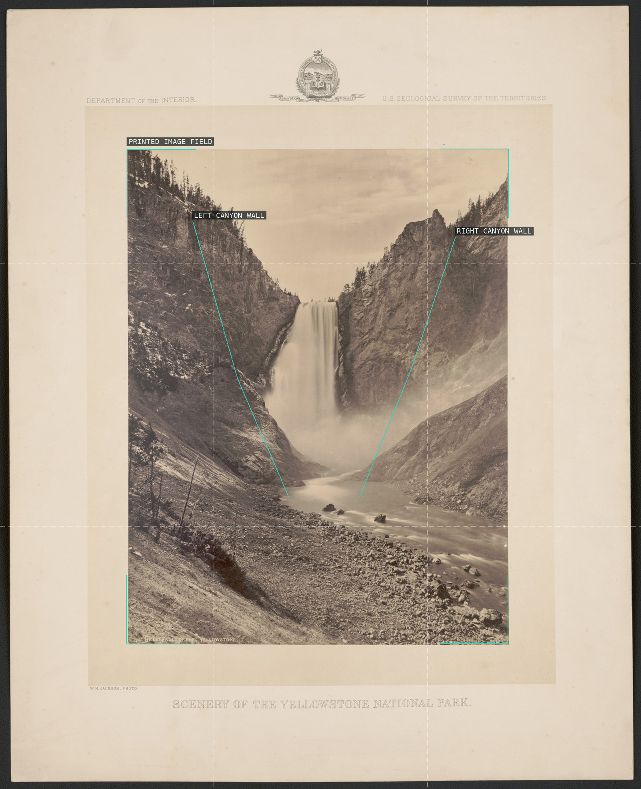
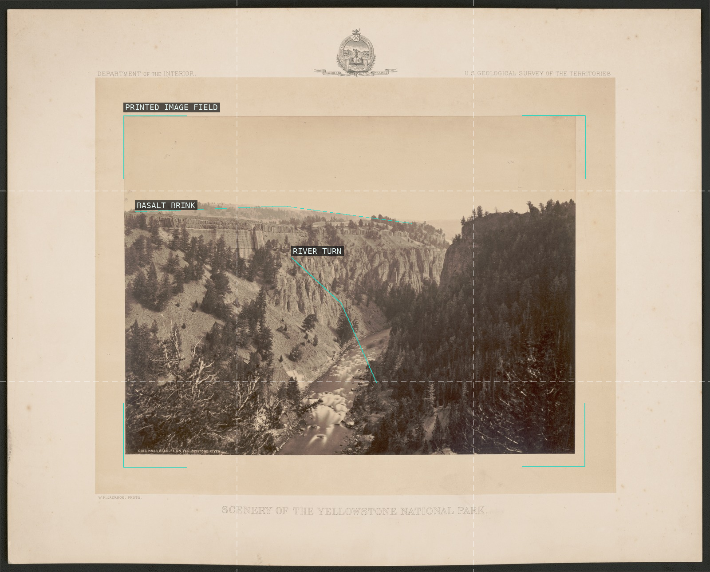
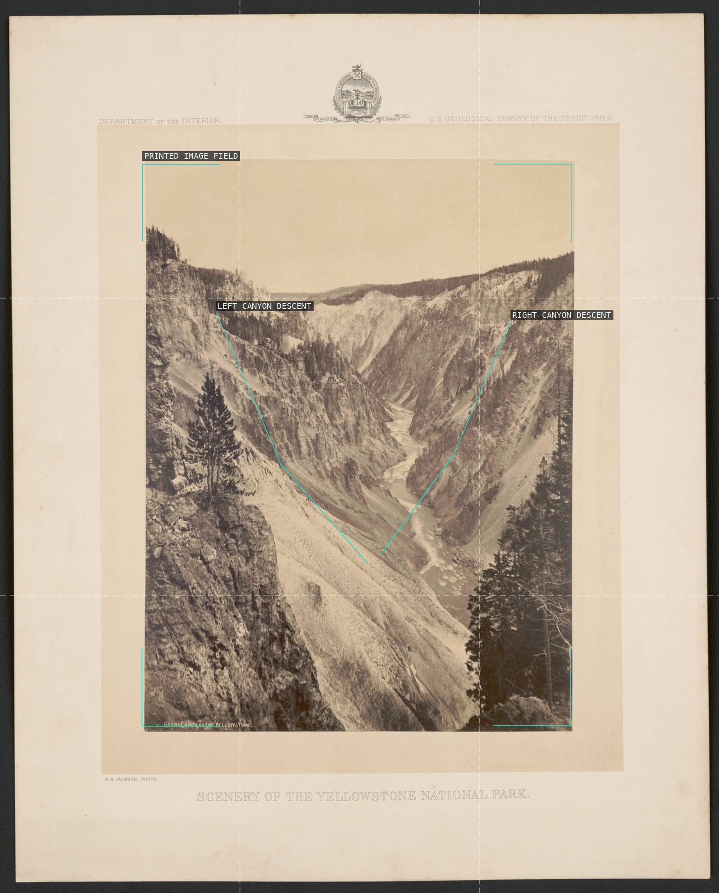
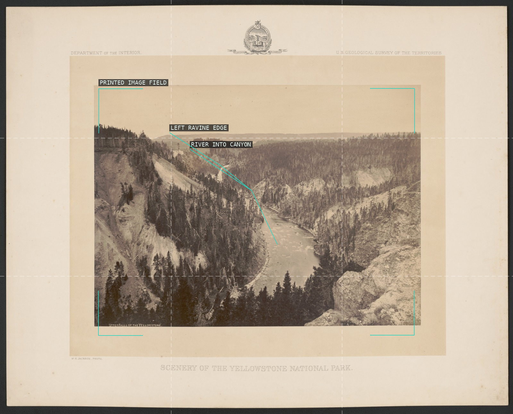
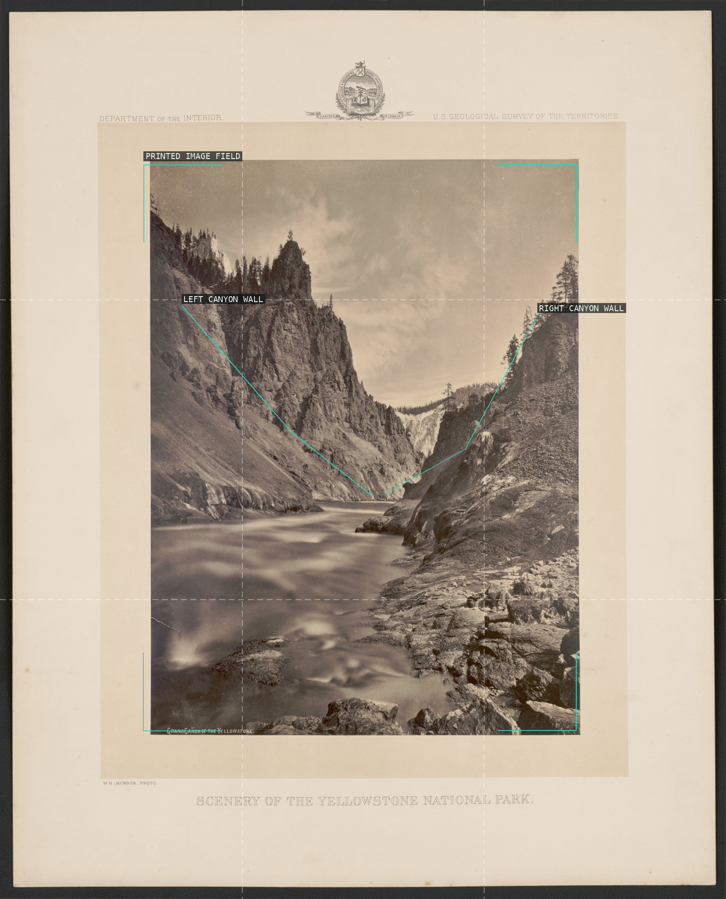
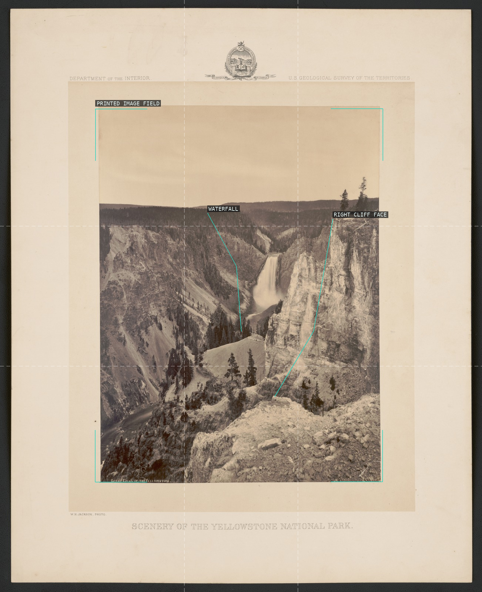
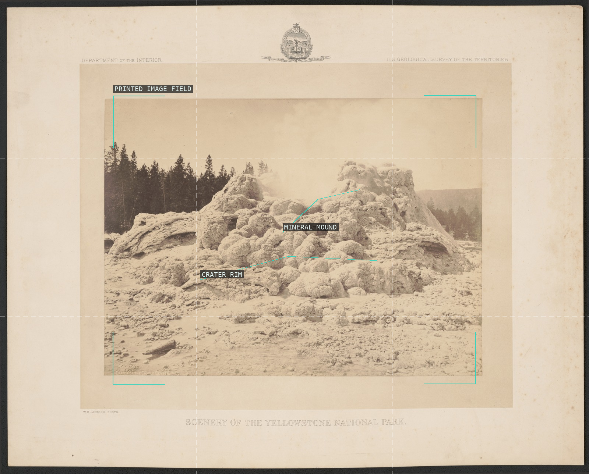
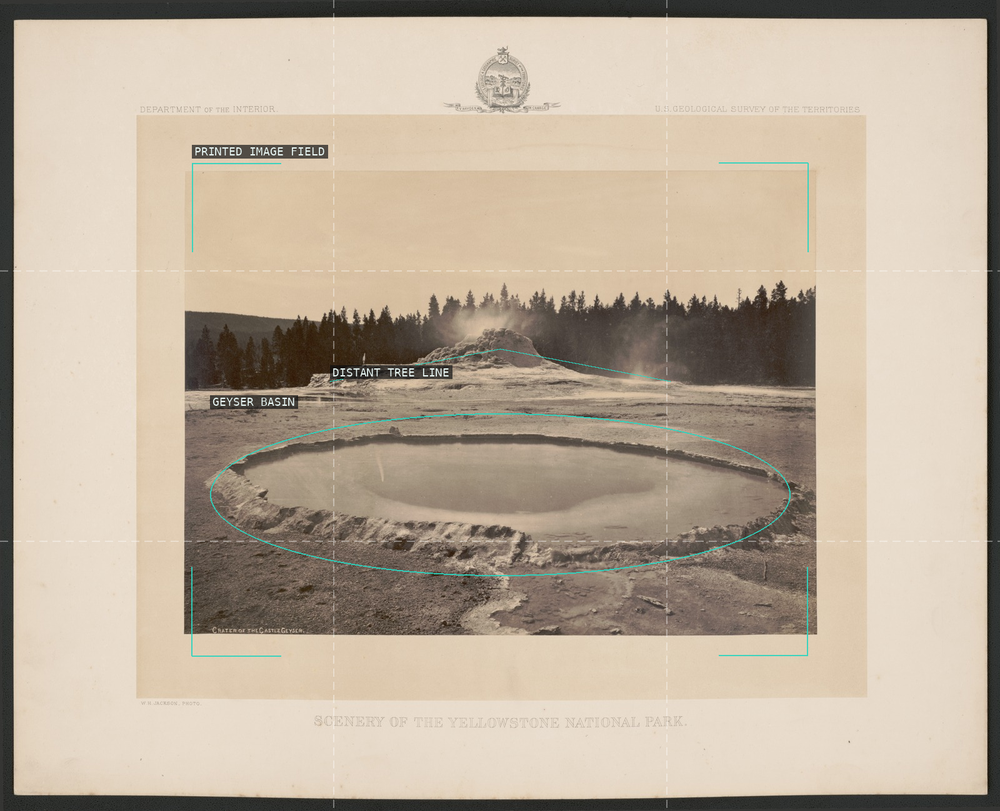
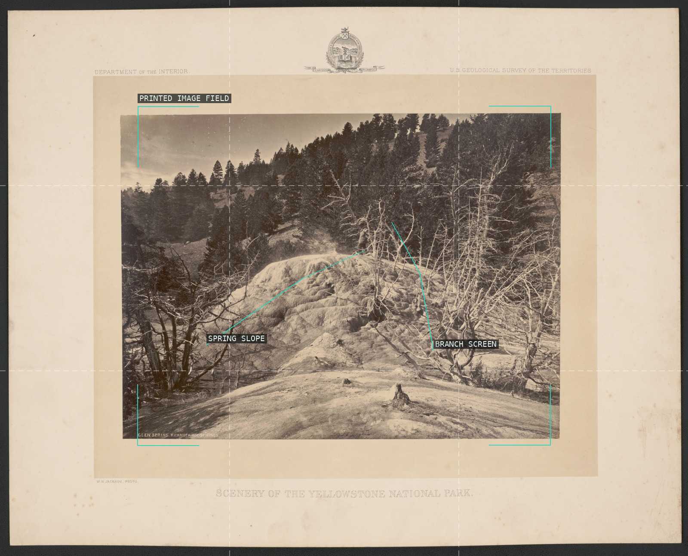
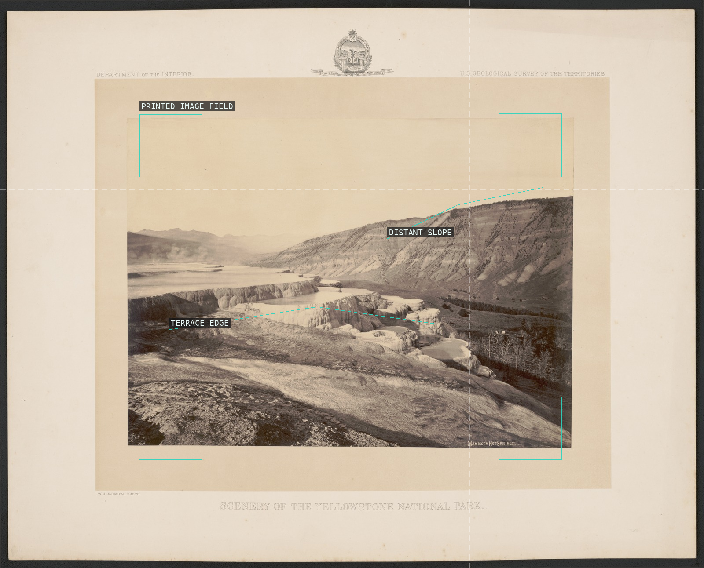

/* william-henry-jackson - proofs */
10 plates. Deterministic overlays rendered by the composition-analysis skill.

01-great-falls-yellowstone
The mounted print encloses a symmetrical gorge whose walls funnel attention to the central fall.

02-columnar-basalts-yellowstone
A broad canyon rim and the river's bend create a measured route through the survey view.

03-grand-canon-yellowstone-distant
Opposed walls narrow into a pale river corridor and turn vast geology into a legible sequence.

04-upper-falls-yellowstone
The river bends from a distant fall into a canyon held by overlapping dark edges.

05-grand-canon-yellowstone
The dark walls converge around a bright water passage, making depth a physical enclosure.

06-great-falls-yellowstone-1872
A distant fall is held between one vast cliff and a stepped foreground descent.

07-crater-castle-geyser
The low crater and central mineral mound turn a geological survey into a nearly frontal still life.

08-crater-castle-geyser-1872
A broad oval basin occupies the foreground while the low tree line keeps the subject still and centered.

09-glen-spring-mammoth-hot-springs
A pale mineral rise advances between two dark vegetative screens.

10-mammoth-hot-springs
Terrace shelves repeat across the print while a long distant slope stabilizes the panorama.